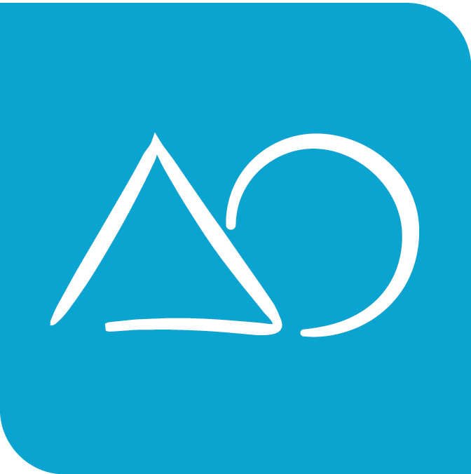
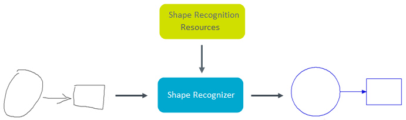

MyScript Shape can recognize a fixed set of hand drawn shapes and lines.

A shape is related to one or more primitives, which is the basic geometrical unit of a shape (a line segment, an arc, etc.). Each type of shape recognized can be described by one or more of these basic primitives. For example, a rectangle is made up of 4 line segments, a circle is a type of arc, etc.
The recognizer will send you a result describing the type of shape, the primitives that constitute it and information on the shape's orientation, size etc., so that it can be reconstituted geometrically. The resulting shape will be "beautified" to give a visually attractive geometrical shape as close as possible to the original. For example, roughly parallel lines will be made perfectly parallel, shapes that are almost touching will be connected and so on.
The Shape recognizer uses resources describing a set of recognizable shapes, and components defining each type of shape. Then, it sends back components in a beautified form (if needed, see doBeautification), describing the shape's type, which curves and line segments it uses, as well as their size and position. That way, you can reconstitute the shape as a vector object.
A list of limitations for Shape recognition can be found in the appendix.
See the Reference guide for information on the mandatory and optional parameters needed for Shape recognition.
The below example shows a Shape recognition request where the following are to be specified:
<!DOCTYPE html>
<html>
<head>
<meta> charset="utf-8"</meta>
<title>Shape - Getting started</title>
</head>
<body>
<h1>Shape - Getting started</h1>
<canvas id="canvas" width="400" height="300" style="background-color: lightyellow; border: 1px solid darkgoldenrod;"></canvas>
<canvas id="result-canvas" width="400" height="300" style="background-color: ghostwhite; border: 1px solid darkgrey;"></canvas>
</body>
<!-- CryptoJS imports -->
<script type="text/javascript" src="lib/core-min.js"></script>
<script type="text/javascript" src="lib/x64-core-min.js"></script>
<script type="text/javascript" src="lib/sha512-min.js"></script>
<script type="text/javascript" src="lib/hmac-min.js"></script>
<!-- Q imports -->
<script type="text/javascript" src="lib/q.js"></script>
<!-- HandJS imports -->
<script type="text/javascript" src="lib/hand.minified-1.3.8.js"></script>
<!-- MyScriptJS imports -->
<script type="text/javascript" src="../myscript.min.js"></script>
<script>
(function () {
var canvas = document.getElementById('canvas');
var context = canvas.getContext('2d');
var resultCanvas = document.getElementById("result-canvas");
var resultContext = resultCanvas.getContext("2d");
var pointerId;
var instanceId;
/*
* Handle MyScript Cloud authentication keys
*/
var applicationKey = prompt("Please enter your application key", "xxxxxxxx-xxxx-xxxx-xxxx-xxxxxxxxxxxx");
var hmacKey = prompt("Please enter your HMAC key", "xxxxxxxx-xxxx-xxxx-xxxx-xxxxxxxxxxxx");
/*
* Declare an instance of MyScriptJS InkManager in order to capture digital ink
*/
var inkManager = new MyScript.InkManager();
/*
* Declare an instance of MyScriptJS Shape Renderer in order to enable ink rendering
*/
var shapeRenderer = new MyScript.ShapeRenderer();
/*
* Declare an instance of MyScriptJS Shape Recognizer
*/
var shapeRecognizer = new MyScript.ShapeRecognizer();
function doRecognition() {
if (!inkManager.isEmpty()) {
shapeRecognizer.doSimpleRecognition(applicationKey, instanceId, inkManager.getStrokes(), hmacKey).then(
function (data) {
if (!instanceId) {
instanceId = data.getInstanceId();
} else if (instanceId !== data.getInstanceId()) {
return;
}
shapeRenderer.clear(resultContext);
shapeRenderer.drawRecognitionResult(inkManager.getStrokes(), data.getShapeDocument(), resultContext);
}
);
} else {
shapeRenderer.clear(resultContext);
}
}
/*
* On pointer down: Start ink rendering and ink capture.
*/
canvas.addEventListener('pointerdown', function (event) {
if (!pointerId) {
pointerId = event.pointerId;
event.preventDefault();
// Start ink rendering
shapeRenderer.drawStart(event.offsetX, event.offsetY);
// Start ink capture
inkManager.startInkCapture(event.offsetX, event.offsetY);
}
}, false);
/*
* On pointer move: Continue ink rendering and ink capture.
*/
canvas.addEventListener('pointermove', function (event) {
if (pointerId === event.pointerId) {
event.preventDefault();
// Continue ink rendering
shapeRenderer.drawContinue(event.offsetX, event.offsetY, context);
// Continue ink capture
inkManager.continueInkCapture(event.offsetX, event.offsetY);
}
}, false);
/*
* On pointer up: Stop ink rendering and ink capture and send recognition request.
*/
canvas.addEventListener('pointerup', function (event) {
if (pointerId === event.pointerId) {
event.preventDefault();
// Stop ink rendering
shapeRenderer.drawEnd(event.offsetX, event.offsetY, context);
// Stop ink capture
inkManager.endInkCapture();
// Send recognition request
pointerId = undefined;
// Send recognition request
doRecognition();
}
}, false);
/*
* On pointer leave: Continue ink rendering and ink capture.
*/
canvas.addEventListener('pointerleave', function (event) {
if (pointerId === event.pointerId) {
event.preventDefault();
// Stop ink rendering
shapeRenderer.drawEnd(event.offsetX, event.offsetY, context);
// Stop ink capture
inkManager.endInkCapture();
pointerId = undefined;
// Send recognition request
doRecognition();
}
}, false);
})();
</script>